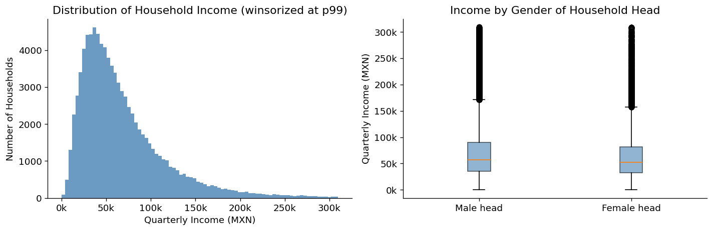
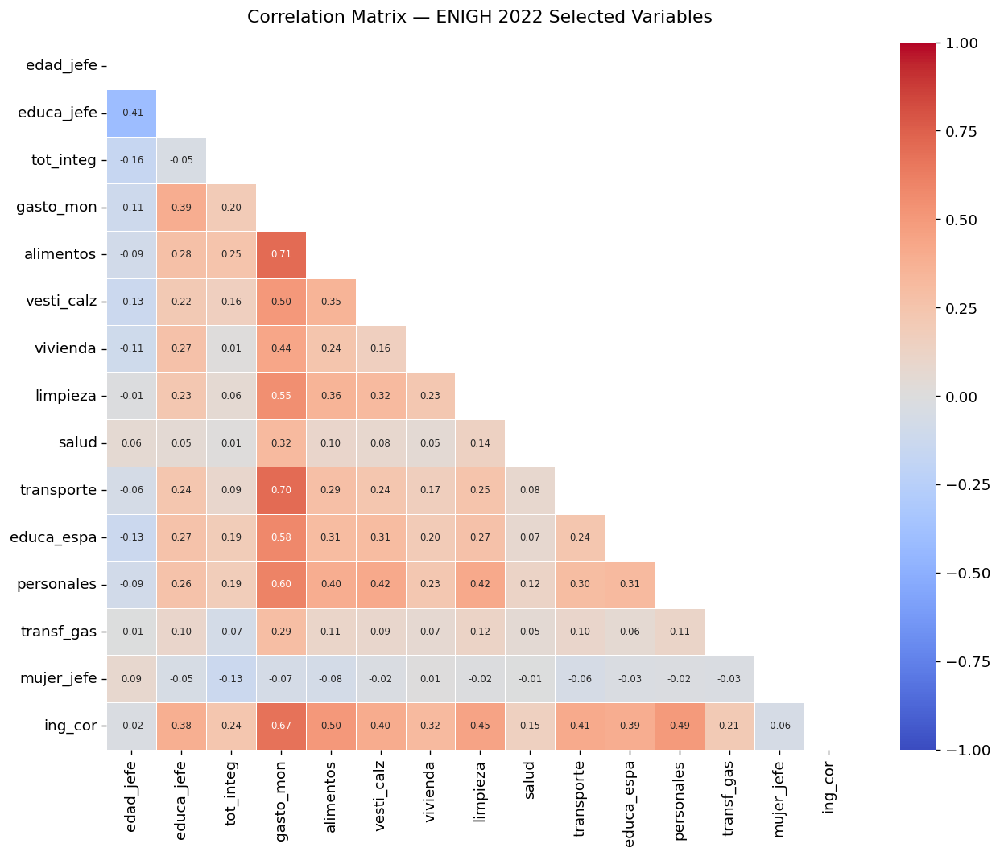
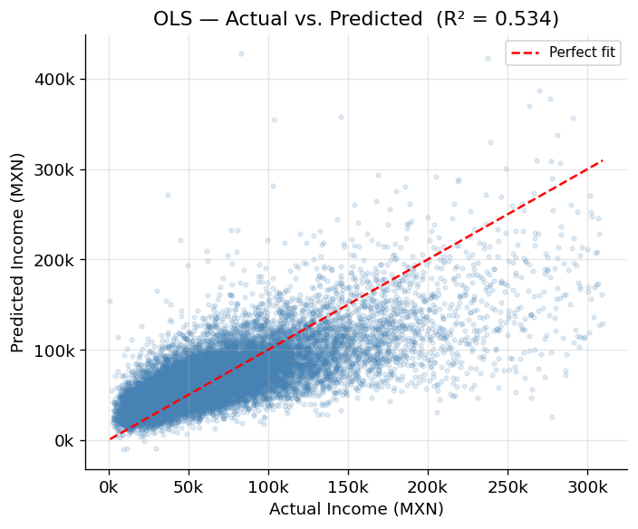
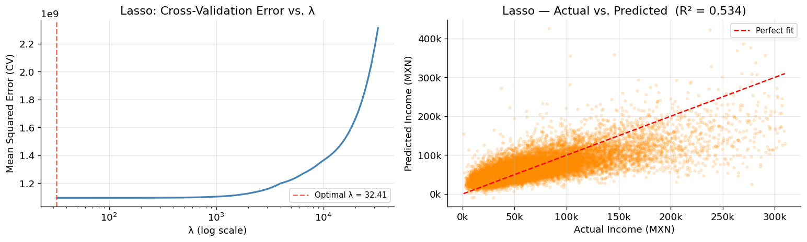
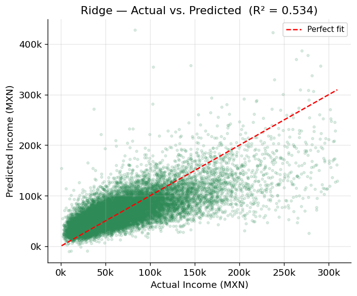
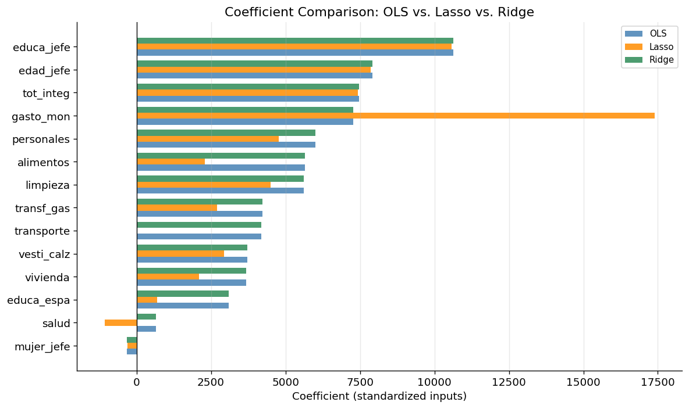

# --- Dependencies ---
import pandas as pd
import numpy as np
import matplotlib.pyplot as plt
import matplotlib.ticker as mticker
import seaborn as sns
from sklearn.linear_model import LinearRegression, LassoCV, RidgeCV
from sklearn.model_selection import train_test_split
from sklearn.preprocessing import StandardScaler
from sklearn.metrics import r2_score, mean_squared_error
import warnings
warnings.filterwarnings('ignore')
plt.rcParams.update({
'figure.dpi': 120,
'axes.spines.top': False,
'axes.spines.right': False,
'font.size': 11
})
np.random.seed(42)Linear Regression with Regularization: OLS, Lasso (L1), and Ridge (L2)
Author: Iván de Luna
Data: ENIGH 2022 — Encuesta Nacional de Ingresos y Gastos de los Hogares (INEGI, Mexico)
Topics: Linear Regression · Regularization · Feature Selection · Cross-Validation
Overview
When modeling household income with many correlated predictors, standard OLS regression can become unstable: coefficients may be large, noisy, and hard to interpret. Regularization addresses this by adding a penalty term to the loss function that discourages overly complex models.
This notebook compares three regression approaches applied to Mexican household survey data:
| Method | Penalty | Effect |
|---|---|---|
| OLS | None | Unbiased estimates; sensitive to multicollinearity |
| Lasso (L1) | \(\lambda \sum |\beta_j|\) | Shrinks some coefficients to exactly zero → automatic variable selection |
| Ridge (L2) | \(\lambda \sum \beta_j^2\) | Shrinks all coefficients toward zero; keeps all variables |
The key tuning parameter \(\lambda\) (called alpha in scikit-learn) controls the strength of the penalty. A larger \(\lambda\) produces more shrinkage. We select the optimal \(\lambda\) via 5-fold cross-validation.
Contents
Requirements
pandas, numpy, matplotlib, seaborn, scikit-learnAbout the ENIGH
The Encuesta Nacional de Ingresos y Gastos de los Hogares (ENIGH) is Mexico’s national household income and expenditure survey, published by INEGI every two years. The 2022 edition covers 91,414 households across the country and includes 126 variables on income sources, expenditure categories, household composition, and socioeconomic characteristics.
We use the concentradohogar table, which aggregates the main income and expenditure variables at the household level.
Download the data:
→ ENIGH 2022 — Microdatos (INEGI)
Select “Principales variables por hogar (concentradohogar.)“* and download the .csv file. Place it in the same directory as this notebook.
Model
We model quarterly household income (ing_cor) as a function of household characteristics and expenditure components:
\[\text{ing\_cor} = \beta_0 + \beta_1\,\text{edad\_jefe} + \beta_2\,\text{educa\_jefe} + \beta_3\,\text{tot\_integ} + \beta_4\,\text{mujer\_jefe} + \sum_{k}\beta_k\,\text{gasto}_k + \varepsilon\]
Variable Dictionary
| Variable | Description |
|---|---|
ing_cor |
Quarterly household current income (MXN) — target |
edad_jefe |
Age of household head |
educa_jefe |
Education level of household head (1–11 scale) |
tot_integ |
Total household members |
mujer_jefe |
Binary: 1 if household head is female |
gasto_mon |
Total monetary expenditure |
alimentos |
Food expenditure |
vesti_calz |
Clothing and footwear |
vivienda |
Housing |
limpieza |
Cleaning and household goods |
salud |
Health |
transporte |
Transportation |
educa_espa |
Education and entertainment |
personales |
Personal care |
transf_gas |
Transfer expenditures |
# --- Load data ---
df = pd.read_csv('concentradohogar.csv', encoding='latin1')
print(f'Dataset: {df.shape[0]:,} households × {df.shape[1]} variables')
# Select variables of interest
FEATURES = [
'edad_jefe', 'educa_jefe', 'tot_integ',
'gasto_mon', 'alimentos', 'vesti_calz', 'vivienda',
'limpieza', 'salud', 'transporte', 'educa_espa',
'personales', 'transf_gas'
]
TARGET = 'ing_cor'
df_model = df[FEATURES + [TARGET, 'sexo_jefe']].copy()
print(f'Missing values: {df_model.isnull().sum().sum()}')
df_model.describe().round(0)Dataset: 91,414 households × 126 variables
Missing values: 0| edad_jefe | educa_jefe | tot_integ | gasto_mon | alimentos | vesti_calz | vivienda | limpieza | salud | transporte | educa_espa | personales | transf_gas | ing_cor | sexo_jefe | |
|---|---|---|---|---|---|---|---|---|---|---|---|---|---|---|---|
| count | 91414.0 | 91414.0 | 91414.0 | 91414.0 | 91414.0 | 91414.0 | 91414.0 | 91414.0 | 91414.0 | 91414.0 | 91414.0 | 91414.0 | 91414.0 | 91414.0 | 91414.0 |
| mean | 52.0 | 6.0 | 3.0 | 43411.0 | 16357.0 | 1635.0 | 3705.0 | 2811.0 | 1523.0 | 8863.0 | 3792.0 | 3488.0 | 1238.0 | 72274.0 | 1.0 |
| std | 16.0 | 3.0 | 2.0 | 38696.0 | 11753.0 | 2804.0 | 5609.0 | 4638.0 | 6310.0 | 16036.0 | 9144.0 | 4515.0 | 5441.0 | 93877.0 | 0.0 |
| min | 14.0 | 1.0 | 1.0 | 0.0 | 0.0 | 0.0 | 0.0 | 0.0 | 0.0 | 0.0 | 0.0 | 0.0 | 0.0 | 0.0 | 1.0 |
| 25% | 39.0 | 4.0 | 2.0 | 21524.0 | 8718.0 | 0.0 | 1053.0 | 914.0 | 0.0 | 2400.0 | 0.0 | 1153.0 | 0.0 | 34521.0 | 1.0 |
| 50% | 51.0 | 6.0 | 3.0 | 34183.0 | 13898.0 | 783.0 | 2211.0 | 1674.0 | 191.0 | 5700.0 | 834.0 | 2246.0 | 0.0 | 55666.0 | 1.0 |
| 75% | 63.0 | 8.0 | 4.0 | 53047.0 | 20893.0 | 2054.0 | 4161.0 | 3066.0 | 1042.0 | 10633.0 | 3809.0 | 4184.0 | 245.0 | 88841.0 | 2.0 |
| max | 106.0 | 11.0 | 20.0 | 1635931.0 | 314460.0 | 110152.0 | 190500.0 | 592928.0 | 493043.0 | 1315006.0 | 336507.0 | 211575.0 | 373390.0 | 17431978.0 | 2.0 |
Handling Outliers
The income variable has extreme right-skew: the 99th percentile is ~310k MXN/quarter while the maximum exceeds 17 million. These outliers are legitimate (very high-income households do exist in Mexico) but they strongly distort regression coefficients.
We apply winsorizing at the 99th percentile — capping values above that threshold — which retains 99% of the data while removing the influence of extreme observations. This is a standard practice in income modeling.
# --- Winsorize income at 99th percentile ---
p99 = df_model[TARGET].quantile(0.99)
n_before = len(df_model)
df_model = df_model[df_model[TARGET] <= p99].copy()
n_after = len(df_model)
print(f'99th percentile cap : MXN {p99:,.0f}/quarter')
print(f'Observations removed: {n_before - n_after:,} ({(n_before-n_after)/n_before*100:.1f}%)')
print(f'Final dataset : {n_after:,} households')
# --- Binary dummy: female household head ---
# sexo_jefe: 1 = male, 2 = female
df_model['mujer_jefe'] = (df_model['sexo_jefe'] == 2).astype(int)
df_model = df_model.drop(columns=['sexo_jefe'])
print(f"\nFemale-headed households: {df_model['mujer_jefe'].sum():,} ({df_model['mujer_jefe'].mean()*100:.1f}%)")99th percentile cap : MXN 309,772/quarter
Observations removed: 915 (1.0%)
Final dataset : 90,499 households
Female-headed households: 29,389 (32.5%)Income Distribution
Before modeling, we examine the distribution of our target variable and the correlation structure among predictors. High correlations between expenditure categories are expected — and are precisely what regularization is designed to handle.
# --- Income distribution ---
fig, axes = plt.subplots(1, 2, figsize=(12, 4))
axes[0].hist(df_model[TARGET], bins=80, color='steelblue', edgecolor='none', alpha=0.8)
axes[0].xaxis.set_major_formatter(mticker.FuncFormatter(lambda x, _: f'{x/1000:.0f}k'))
axes[0].set_xlabel('Quarterly Income (MXN)')
axes[0].set_ylabel('Number of Households')
axes[0].set_title('Distribution of Household Income (winsorized at p99)')
axes[1].boxplot(
[df_model[df_model['mujer_jefe']==0][TARGET],
df_model[df_model['mujer_jefe']==1][TARGET]],
labels=['Male head', 'Female head'],
patch_artist=True,
boxprops=dict(facecolor='steelblue', alpha=0.6)
)
axes[1].yaxis.set_major_formatter(mticker.FuncFormatter(lambda x, _: f'{x/1000:.0f}k'))
axes[1].set_ylabel('Quarterly Income (MXN)')
axes[1].set_title('Income by Gender of Household Head')
plt.tight_layout()
plt.show()
print(f"Mean income — Male head : MXN {df_model[df_model['mujer_jefe']==0][TARGET].mean():,.0f}")
print(f"Mean income — Female head: MXN {df_model[df_model['mujer_jefe']==1][TARGET].mean():,.0f}")
Mean income — Male head : MXN 69,771
Mean income — Female head: MXN 63,921# --- Correlation heatmap ---
# Note: gasto_mon is the sum of all expenditure sub-categories.
# This creates near-perfect multicollinearity — a key motivation for regularization.
corr_cols = FEATURES + ['mujer_jefe', TARGET]
corr = df_model[corr_cols].corr()
fig, ax = plt.subplots(figsize=(11, 9))
mask = np.triu(np.ones_like(corr, dtype=bool))
sns.heatmap(
corr, mask=mask, annot=True, fmt='.2f',
cmap='coolwarm', center=0, vmin=-1, vmax=1,
linewidths=0.4, ax=ax, annot_kws={'size': 7}
)
ax.set_title('Correlation Matrix — ENIGH 2022 Selected Variables', pad=15)
plt.tight_layout()
plt.show()
The heatmap reveals a key modeling challenge: gasto_mon (total expenditure) is by construction the sum of all expenditure sub-categories included as predictors. This introduces near-perfect multicollinearity — OLS will produce large, unstable coefficients as a result. Lasso and Ridge are specifically designed to handle this situation.
# --- Train/test split and feature scaling ---
# Scaling is required for regularized models: without it, variables with larger
# magnitudes would be penalized more heavily simply due to their units.
ALL_FEATURES = FEATURES + ['mujer_jefe']
X = df_model[ALL_FEATURES]
y = df_model[TARGET]
X_train, X_test, y_train, y_test = train_test_split(
X, y, test_size=0.2, random_state=42
)
scaler = StandardScaler()
X_train_sc = scaler.fit_transform(X_train) # fit on train only
X_test_sc = scaler.transform(X_test) # apply same transform to test
print(f'Training set : {X_train.shape[0]:,} observations')
print(f'Test set : {X_test.shape[0]:,} observations')
print(f'Features : {len(ALL_FEATURES)}')Training set : 72,399 observations
Test set : 18,100 observations
Features : 14Ordinary Least Squares minimizes the sum of squared residuals with no penalty:
\[\hat{\boldsymbol{\beta}}_{OLS} = \arg\min_{\boldsymbol{\beta}} \sum_{i=1}^{n}(y_i - \mathbf{x}_i^\top\boldsymbol{\beta})^2\]
OLS produces unbiased estimates, but in the presence of multicollinearity — as we have here — the estimates become highly variable and sensitive to small changes in the data.
# --- OLS ---
model_ols = LinearRegression()
model_ols.fit(X_train_sc, y_train)
y_pred_ols = model_ols.predict(X_test_sc)
r2_ols = r2_score(y_test, y_pred_ols)
mse_ols = mean_squared_error(y_test, y_pred_ols)
print('OLS Coefficients (standardized inputs):')
for name, coef in zip(ALL_FEATURES, model_ols.coef_):
print(f' {name:<15}: {coef:>12,.2f}')
print(f' {"Intercept":<15}: {model_ols.intercept_:>12,.2f}')
print()
print(f'R² : {r2_ols:.4f}')
print(f'RMSE: MXN {np.sqrt(mse_ols):,.0f}')OLS Coefficients (standardized inputs):
edad_jefe : 7,921.63
educa_jefe : 10,631.79
tot_integ : 7,476.08
gasto_mon : 7,271.07
alimentos : 5,646.87
vesti_calz : 3,718.88
vivienda : 3,676.19
limpieza : 5,623.22
salud : 642.28
transporte : 4,183.45
educa_espa : 3,087.92
personales : 6,008.72
transf_gas : 4,228.24
mujer_jefe : -329.53
Intercept : 67,954.29
R² : 0.5344
RMSE: MXN 32,367# --- OLS: Actual vs. Predicted ---
fig, ax = plt.subplots(figsize=(6, 5))
ax.scatter(y_test, y_pred_ols, alpha=0.15, s=8, color='steelblue')
lims = [y_test.min(), y_test.max()]
ax.plot(lims, lims, 'r--', linewidth=1.5, label='Perfect fit')
ax.xaxis.set_major_formatter(mticker.FuncFormatter(lambda x, _: f'{x/1000:.0f}k'))
ax.yaxis.set_major_formatter(mticker.FuncFormatter(lambda x, _: f'{x/1000:.0f}k'))
ax.set_xlabel('Actual Income (MXN)')
ax.set_ylabel('Predicted Income (MXN)')
ax.set_title(f'OLS — Actual vs. Predicted (R² = {r2_ols:.3f})')
ax.legend(fontsize=9)
ax.grid(True, alpha=0.3)
plt.tight_layout()
plt.show()
Lasso (Least Absolute Shrinkage and Selection Operator) adds an L1 penalty to the OLS objective:
\[\hat{\boldsymbol{\beta}}_{Lasso} = \arg\min_{\boldsymbol{\beta}} \sum_{i=1}^{n}(y_i - \mathbf{x}_i^\top\boldsymbol{\beta})^2 + \lambda\sum_{j=1}^{p}|\beta_j|\]
The L1 penalty has a geometric property that causes some coefficients to be exactly zero, effectively removing those variables from the model. This makes Lasso a built-in variable selection method — particularly useful when many predictors are correlated or redundant.
Choosing \(\lambda\) with Cross-Validation
LassoCV trains the model across a grid of \(\lambda\) values and selects the one that minimizes the average out-of-fold prediction error.
# --- Lasso with cross-validated alpha selection ---
model_lasso = LassoCV(cv=5, random_state=42, max_iter=5000)
model_lasso.fit(X_train_sc, y_train)
y_pred_lasso = model_lasso.predict(X_test_sc)
r2_lasso = r2_score(y_test, y_pred_lasso)
mse_lasso = mean_squared_error(y_test, y_pred_lasso)
n_zeroed = np.sum(model_lasso.coef_ == 0)
print(f'Optimal λ (alpha) selected by 5-fold CV: {model_lasso.alpha_:.4f}')
print(f'Variables zeroed out: {n_zeroed} of {len(ALL_FEATURES)}')
print()
print('Lasso Coefficients:')
for name, coef in zip(ALL_FEATURES, model_lasso.coef_):
flag = ' ← ZEROED (variable excluded)' if coef == 0 else ''
print(f' {name:<15}: {coef:>12,.2f}{flag}')
print()
print(f'R² : {r2_lasso:.4f}')
print(f'RMSE: MXN {np.sqrt(mse_lasso):,.0f}')Optimal λ (alpha) selected by 5-fold CV: 32.4087
Variables zeroed out: 1 of 14
Lasso Coefficients:
edad_jefe : 7,851.98
educa_jefe : 10,581.49
tot_integ : 7,436.30
gasto_mon : 17,395.19
alimentos : 2,298.72
vesti_calz : 2,931.03
vivienda : 2,102.25
limpieza : 4,500.67
salud : -1,075.73
transporte : -0.00 ← ZEROED (variable excluded)
educa_espa : 685.35
personales : 4,772.83
transf_gas : 2,693.85
mujer_jefe : -298.44
R² : 0.5344
RMSE: MXN 32,367# --- Lasso CV path: how MSE varies with lambda ---
fig, axes = plt.subplots(1, 2, figsize=(13, 4))
# CV error path
alphas = model_lasso.alphas_
mse_path = model_lasso.mse_path_.mean(axis=1)
axes[0].semilogx(alphas, mse_path, color='steelblue', linewidth=2)
axes[0].axvline(model_lasso.alpha_, color='tomato', linestyle='--',
label=f'Optimal λ = {model_lasso.alpha_:.2f}')
axes[0].set_xlabel('λ (log scale)')
axes[0].set_ylabel('Mean Squared Error (CV)')
axes[0].set_title('Lasso: Cross-Validation Error vs. λ')
axes[0].legend(fontsize=9)
axes[0].grid(True, alpha=0.3)
# Actual vs Predicted
axes[1].scatter(y_test, y_pred_lasso, alpha=0.15, s=8, color='darkorange')
lims = [y_test.min(), y_test.max()]
axes[1].plot(lims, lims, 'r--', linewidth=1.5, label='Perfect fit')
axes[1].xaxis.set_major_formatter(mticker.FuncFormatter(lambda x, _: f'{x/1000:.0f}k'))
axes[1].yaxis.set_major_formatter(mticker.FuncFormatter(lambda x, _: f'{x/1000:.0f}k'))
axes[1].set_xlabel('Actual Income (MXN)')
axes[1].set_ylabel('Predicted Income (MXN)')
axes[1].set_title(f'Lasso — Actual vs. Predicted (R² = {r2_lasso:.3f})')
axes[1].legend(fontsize=9)
axes[1].grid(True, alpha=0.3)
plt.tight_layout()
plt.show()
Ridge adds an L2 penalty — the sum of squared coefficients:
\[\hat{\boldsymbol{\beta}}_{Ridge} = \arg\min_{\boldsymbol{\beta}} \sum_{i=1}^{n}(y_i - \mathbf{x}_i^\top\boldsymbol{\beta})^2 + \lambda\sum_{j=1}^{p}\beta_j^2\]
Unlike Lasso, Ridge shrinks all coefficients toward zero but never to exactly zero — all variables remain in the model. It is particularly effective when many predictors each contribute small, related effects. The bias-variance tradeoff: Ridge accepts some bias in exchange for a large reduction in variance, often improving out-of-sample predictions.
# --- Ridge with cross-validated alpha selection ---
model_ridge = RidgeCV(cv=5)
model_ridge.fit(X_train_sc, y_train)
y_pred_ridge = model_ridge.predict(X_test_sc)
r2_ridge = r2_score(y_test, y_pred_ridge)
mse_ridge = mean_squared_error(y_test, y_pred_ridge)
print(f'Optimal λ (alpha) selected by 5-fold CV: {model_ridge.alpha_:.4f}')
print()
print('Ridge Coefficients:')
for name, coef in zip(ALL_FEATURES, model_ridge.coef_):
print(f' {name:<15}: {coef:>12,.2f}')
print()
print(f'R² : {r2_ridge:.4f}')
print(f'RMSE: MXN {np.sqrt(mse_ridge):,.0f}')Optimal λ (alpha) selected by 5-fold CV: 10.0000
Ridge Coefficients:
edad_jefe : 7,919.28
educa_jefe : 10,629.28
tot_integ : 7,474.45
gasto_mon : 7,271.11
alimentos : 5,647.04
vesti_calz : 3,718.84
vivienda : 3,676.10
limpieza : 5,623.04
salud : 642.50
transporte : 4,183.45
educa_espa : 3,088.22
personales : 6,008.61
transf_gas : 4,227.75
mujer_jefe : -329.61
R² : 0.5344
RMSE: MXN 32,367# --- Ridge: Actual vs. Predicted ---
fig, ax = plt.subplots(figsize=(6, 5))
ax.scatter(y_test, y_pred_ridge, alpha=0.15, s=8, color='seagreen')
lims = [y_test.min(), y_test.max()]
ax.plot(lims, lims, 'r--', linewidth=1.5, label='Perfect fit')
ax.xaxis.set_major_formatter(mticker.FuncFormatter(lambda x, _: f'{x/1000:.0f}k'))
ax.yaxis.set_major_formatter(mticker.FuncFormatter(lambda x, _: f'{x/1000:.0f}k'))
ax.set_xlabel('Actual Income (MXN)')
ax.set_ylabel('Predicted Income (MXN)')
ax.set_title(f'Ridge — Actual vs. Predicted (R² = {r2_ridge:.3f})')
ax.legend(fontsize=9)
ax.grid(True, alpha=0.3)
plt.tight_layout()
plt.show()
We now compare the three models side by side — both in terms of predictive performance and how each treats the coefficients.
# --- Performance summary ---
results = pd.DataFrame({
'Model' : ['OLS', 'Lasso (L1)', 'Ridge (L2)'],
'λ (alpha)': ['-', f'{model_lasso.alpha_:.2f}', f'{model_ridge.alpha_:.2f}'],
'R²' : [r2_ols, r2_lasso, r2_ridge],
'RMSE (MXN)': [np.sqrt(mse_ols), np.sqrt(mse_lasso), np.sqrt(mse_ridge)],
'Vars zeroed': [0, int(np.sum(model_lasso.coef_ == 0)), 0]
})
results['R²'] = results['R²'].map('{:.4f}'.format)
results['RMSE (MXN)'] = results['RMSE (MXN)'].map('{:,.0f}'.format)
print(results.to_string(index=False)) Model λ (alpha) R² RMSE (MXN) Vars zeroed
OLS - 0.5344 32,367 0
Lasso (L1) 32.41 0.5344 32,367 1
Ridge (L2) 10.00 0.5344 32,367 0# --- Coefficient comparison plot ---
coef_df = pd.DataFrame({
'Feature': ALL_FEATURES,
'OLS' : model_ols.coef_,
'Lasso' : model_lasso.coef_,
'Ridge' : model_ridge.coef_
}).set_index('Feature')
# Sort by absolute OLS coefficient for readability
coef_df = coef_df.reindex(coef_df['OLS'].abs().sort_values(ascending=True).index)
fig, ax = plt.subplots(figsize=(10, 6))
x = np.arange(len(coef_df))
width = 0.26
ax.barh(x - width, coef_df['OLS'], width, label='OLS', color='steelblue', alpha=0.85)
ax.barh(x, coef_df['Lasso'], width, label='Lasso', color='darkorange', alpha=0.85)
ax.barh(x + width, coef_df['Ridge'], width, label='Ridge', color='seagreen', alpha=0.85)
ax.set_yticks(x)
ax.set_yticklabels(coef_df.index)
ax.axvline(0, color='black', linewidth=0.8)
ax.set_xlabel('Coefficient (standardized inputs)')
ax.set_title('Coefficient Comparison: OLS vs. Lasso vs. Ridge')
ax.legend(fontsize=9)
ax.grid(True, alpha=0.3, axis='x')
plt.tight_layout()
plt.show()
Results
All three models achieve an R² of approximately 0.53 on the test set — a meaningful improvement over the unprocessed notebook (R² ≈ 0.28), primarily due to winsorizing extreme income values. The remaining unexplained variance reflects real complexity in income determination that goes beyond household expenditure structure.
What the models tell us economically
- Education (
educa_jefe) is the strongest demographic predictor of income, consistent with human capital theory. gasto_moncarries a large coefficient because it is collinear with income by construction — higher-income households spend more in aggregate.- Lasso zeroed out
transporte, suggesting that once total expenditure and other categories are controlled for, transportation spending adds no independent explanatory power for income. mujer_jefe(female household head) shows a consistently negative coefficient — female-headed households have lower average income, reflecting structural gender income gaps in Mexico.
When to use each method
| Situation | Recommended method |
|---|---|
| Few predictors, low multicollinearity | OLS |
| Many predictors, want automatic variable selection | Lasso |
| High multicollinearity, want to keep all predictors | Ridge |
| Both sparsity and multicollinearity | Elastic Net (combination of L1 + L2) |
Always select \(\lambda\) via cross-validation — never use an arbitrary value like 0.1 without validation.
Data source
INEGI (2022). Encuesta Nacional de Ingresos y Gastos de los Hogares (ENIGH) 2022. Instituto Nacional de Estadística y Geografía. https://www.inegi.org.mx/programas/enigh/nc/2022/